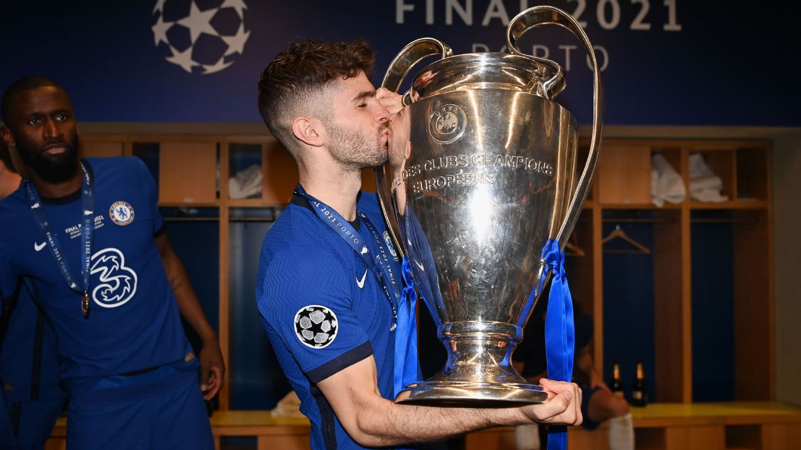

CHRISTIAN PULISIC
CHRISTIAN PULISICพูลิซิชเซ็นสัญญากับเชลซีเป็นระยะเวลา 5 ปีครึ่ง และกลายเป็นนักเตะอเมริกันคนที่สามในประวัติศาสตร์ของเรา เขาเป็นนักเตะที่ลงเล่นตำแหน่งปีกขวาโดยธรรมชาติ มีความรวดเร็ว ว่องไว และใช้เท้าได้ทั้งสองข้าง และยังสามารถเล่นทางด้านซ้ายหรือหลังกองหน้าได้อีกด้วย
โธมัส ทูเคิ่ล อดีตบอสของ พูลิซิช ที่โบรุสเซีย ดอร์ตมุนด์ เข้ามารับงานในเดือนมกราคม มีการปรับไปใช้แผน 3-4-2-1 ซึ่งช่วงแรกดาวเตะอเมริกันได้ลงสนามด้วยบทบาทตัวสำรองเป็นส่วนใหญ่
พอมาถึงจุดนี้ของซีซั่น เขาทำผลงานได้ในระดับเดียวกับจุดจบที่ทำไว้เมื่อซีซั่นที่แล้ว โดยได้ลงเป็นตัวจริงมากขึ้น และแสดงความสามารถให้เห็นในรายการแชมเปี้ยนส์ ลีกด้วยเช่นกัน ในเกมเหย้าที่พบกับปอร์โต้ เขาคว้ารางวัลแมน ออฟ เดอะ แมตช์ โดยเป็นตัวหลักในเกมรุก และเรียกฟาวล์จากคู่แข่งแดนฝอยทองได้ถึง 11 ครั้ง ซึ่งถือว่ามากที่สุดในหนึ่งนัดของรายการนี้ในรอบ 5 ปีหลังสุด
จากนั้นเขาทำประตูใส่เรอัล มาดริดในเกมเยือนโดยหลอก ธิโบต์ คูร์กตัวส์ หัวหมุน ส่วนเกมนัดที่สองเขาเป็นคนจ่ายบอลให้ เมสัน เมาท์ ยิงประตูการันตีการเข้าชิงชนะเลิศในเมืองปอร์โต้อีกด้วย
พูลิซิช โชว์ฟอร์มหวือหวาหลังลงเล่นเป็นตัวสำรองในเอฟเอ คัพ รอบชิงชนะเลิศ แต่ช่วยพวกเราจากความพ่ายแพ้ไม่ได้ เขาทำผลงานดังกล่าวอีกครั้งในนัดชิงชนะเลิศฟุตบอลยุโรป แต่หนนี้ผลลัพธ์แตกต่างออกไป โดย คริสเตียน เกือบบวกประตูที่สองในจังหวะที่ยิงหลุดกรอบ สุดท้าย "สิงห์บลูส์" เฉือนชนะ "เรือใบสีฟ้า" 1-0 คว้าแชมป์ยุโรป และนั่นทำให้ปีกชาวอเมริกันรายนี้ สร้างประวัติศาสตร์เป็นผู้เล่นคนแรกจากชาติของเขา ที่ได้ลงเล่นและคว้าชัยชนะในแชมเปี้ยนส์ ลีก รอบชิงชนะเลิศ
ดาวเตะทีมชาติสหรัฐอเมริกา ผู้ถือพาสปอร์ตของประเทศโครเอเชีย เขาได้รับการโหวตให้เป็นนักเตะยอดเยี่ยมแห่งปี 2017 ของ 'แดนลุงแซม' และเป็นดาวเด่นในการแข่งขัน CONCACAF โกลด์ คัพ ช่วงซัมเมอร์ ปี 2019 โดยพาสหรัฐอเมริกาผ่านเข้าถึงรอบชิงชนะเลิศ ก่อนปราชัยให้กับเม็กซิโก ซึ่ง พูลิซิช คว้ารางวัลผู้เล่นดาวรุ่งยอดเยี่ยมประจำทัวร์นาเม้นต์ ก่อนจะมาสมทบกับขุมกำลังเชลซี
SOCIAL MEDIA
 |
|